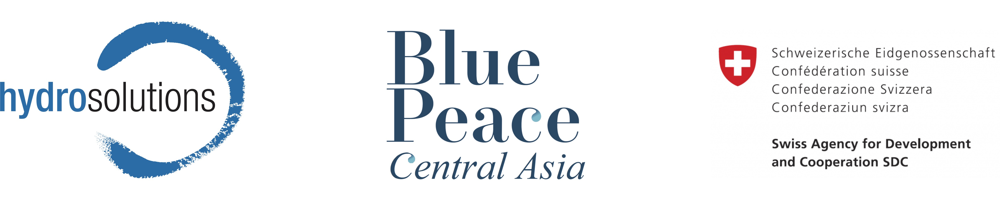

Welcome
This handbook on hydrological modeling of Central Asian river basins is geared towards young water professionals in Central Asia. They inherit fascinatingly complex natural and man-made hydrological systems. They face work where opportunities for modernization abound after decades of limited investments in the water sectors of the countries and where continuous population growth and a changing climate pose emerging challenges. At the same time, they face work in a field that has enabled the region to prosper and flourish over hundreds if not thousands of years.
The authors hope that this textbook provides a source of inspiration for these students and that the text and the methods presented will also be used by teachers and integrated in university curricula locally.
The book is dedicated to colleagues at the Central Asian Hydrometeorological Agencies whose tireless work in collecting and analyzing hydro-meteorological data in Central Asia has helped to significantly improve our understanding of the complex runoff generation processes at work in the region.
The authors are grateful for the support by the Global Water Programme of the Swiss Agency for Development and Cooperation who greatly helped to push the envelop further with regard to modern water education in the Central Asia region. Finally, Mr. Andrey Yakovlev and his tremendous knowledge of the region is acknowledged.
License


This work is licensed under a Creative Commons Attribution-ShareAlike 4.0 International License.
The development of this book was supported by the Swiss Agency for Development and Cooperation.